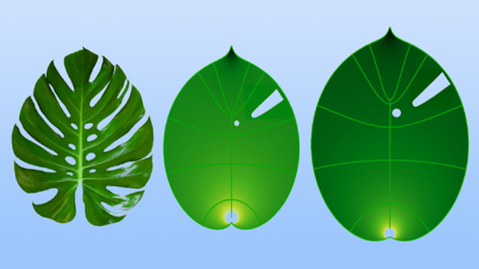

Dpu GaZete
ABONE OL
HOME
SPORT
EDUCAION
TECHNOLOGY
3 yeni beyin tümörü alt türü keşfedildi: Yeni tedavilerin bulunmasını sağlayacak
Bilim insanları, yaygın görülen bir beyin tümörünün 3 yeni alt türünü belirledi. Araştırmacılar,

Yaprak Büyümesinde Konformal Model
Fizik alanındaki bilim insanları, yaprakların büyümesini tahmin etmek için matematiksel bir dönüşüm olan konformal haritanın kullanıldığını göstermişler
Kübik Bor Arsenit Silikona Meydan Okuyor
Kubik Bor Arsenit Silikona Meydan Okuyor - Güç küpü: Araştırmacılara göre, kübik bor arsenit şimdiye kadar keşfedilmiş en iyi yarı iletken malzeme ve muhtemelen mümkün olanın en iyisi
Türk Astrofizikçi Ali Övgün Dünyanın En Etkili Bilim İnsanları Arasında
Dünyanın En Etkili Bilim İnsanları” Listesinde DAÜ’den 14 Akademisyen Yer Aldı. Doğu Akdeniz üniversitesinden 14 bilim insanı, Stanford Üniversitesince yapılan araştırma
20-24 yaş grubu zirvede! HIV-AIDS artış şampiyonuyuz
HIV/AIDS tedavilerine ulaşmada son derece iyi bir noktada olan Türkiye’de yeni vaka sayısında son 20 yılda yüzde 400’ün üzerinde artış olduğu görülüyor